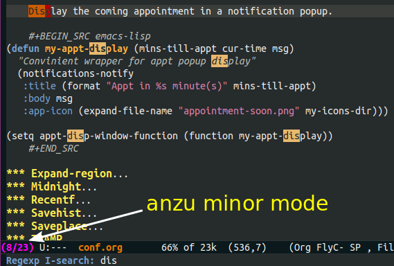

Emacs Configurations

However I organize my Emacs configurations, they all seem a mess to me after a while.
1 Introduction
This is my Emacs configuration, stored in conf.org file with all
these texts and loaded by org-babel-load-file from init.el. This
is inspired by Matthew Lee Hinman1 in his settings. This project
is hosted with ♥ by Github, here is the repo.
This file is last updated 2015-07-28 15:16.
2 Bootstrap
I use emacs.d/init.el to bootstrap all my Emacs configurations. The
only thing done in init.el is to load this file, conf.org, which
includes all our documented configurations.
(require 'org) (org-babel-load-file "~/.emacs.d/conf.org")
The following sections are all the documented configurations.
3 Package Manager
Before any loading and configuration, I need to make sure all my utility packages are installed.
3.1 Deprecated Manager
This is how I did, and probably what you are doing.
- First of all, maintain a list of packages.
(defvar my/package-list '( ;; A super long list of all packages ))
- Then add official archives and initialize the package system.
(require 'package) (setq package-archives '(("gnu" . "http://elpa.gnu.org/packages/") ("marmalade" . "http://marmalade-repo.org/packages/") ("melpa" . "http://melpa.org/packages/") ("org" . "http://orgmode.org/elpa/"))) (package-initialize) (or (file-exists-p package-user-dir) (package-refresh-contents))
- And finally install, if neccessary all the packages.
(dolist (pack my/package-list) (unless (package-installed-p pack) (package-install pack)))
It works. But there is one thing I particularly do not like about
the default packaging system: when updating packages, it
re-downloads all the outdated package instead of retrieving only
modified files like git pull. It takes quite a while to uncompress
and compile large packages, e.g., ess (Emacs Speaks Statistics),
org, org-plus-contrib and etc. And Emacs is blocked during this
process since it is single-threaded!
3.2 Preferred Way
Just found about Cask, yet another package manager for Emacs. See
Why Cask? for the reason of switching to Cask. All dependencies are
stored in Cask under .emacs.d/.
The contents of Cask is as follows (long list of packages are omitted for brevity).
(source gnu) (source melpa) (source marmalade) (source org) (depends-on "ace-jump-mode") (depends-on "ag") (depends-on "anzu") (depends-on "async") (depends-on "auctex") ;; the (depends-on ...) list goes on and on
And the following snippet is needed to initialize the cask manager.
(require 'cask "~/.cask/cask.el") (cask-initialize) (require 'pallet) (pallet-mode t)
For more information about Cask, please refer to its documentation.
And as usual, load use-package first which is used for loading
packages everywhere else.
(require 'use-package)
Disable debugging information for package loading.
(setq use-package-verbose nil)
4 Helper Variables and Functions
Now start with some useful variables and function.
(setq user-full-name "Zhitao Gong") (setq user-mail-address "me@gongzhitaao.org") (defvar my-dir user-emacs-directory "The root dir for my Emacs configuration.") (defvar my-tmp (expand-file-name "tmp" my-dir) "Temp files that might be useful but that I don't care about.") (defvar my-personal-dir (expand-file-name "~/Dropbox/emacs/personal")) (defvar my-icons-dir (expand-file-name "icons" my-dir) "Where All the icons are stored.") (unless (file-exists-p my-tmp) (make-directory my-tmp))
Then follows some helper functions.
(defun my-apply-region-or-line (func) "Apply FUNC to a region, or current line if mark is not active." (save-excursion (if (region-active-p) (funcall func (region-beginning) (region-end)) (funcall func (line-beginning-position) (line-end-position))))) (defun my-apply-region-or-para (func) "Apply FUNC to a region, or current paragraph if mark is not active." (save-excursion (if (not (region-active-p)) (mark-paragraph)) (funcall func (region-beginning) (region-end)))) (defun sort-words (reverse beg end) "Sort words in region alphabetically, in REVERSE if negative. Prefixed with negative \\[universal-argument], sorts in reverse. The variable `sort-fold-case' determines whether alphabetic case affects the sort order. See `sort-regexp-fields'." (interactive "*P\nr") (sort-regexp-fields reverse "\\(\\w\\|-\\)+" "\\&" beg end)) (defmacro rename-modeline (package-name mode new-name) "Rename modeline." `(eval-after-load ,package-name '(defadvice ,mode (after rename-modeline activate) (setq mode-name ,new-name))))
5 Packages and Modes
This section contains goodies that enpower Emacs. Two of the most important packages I'm using, Orgmode and Gnus are kept in separate configuration files and listed in separeted sections, while all others are all listed under Section 5.4.
5.1 Gnus
Gnus is a flexible message reader running under GNU Emacs. It supports reading and composing both news and mail. In addition, it is able to use a number of web-based sources as inputs for its groups.
I choose Gnus over other GUI or console email client mainly because it is a builtin Emacs package, which gives me access to most of the powerful goodies when composing and reading emails.
With all that being said, it has a rather steep learning curve, three years for me. However, as a heavy Emacs user, it worth the effort.
5.1.1 Tool chain
Gnus can be used to handle all the process of mail, i.e., fetching mails from server as well as local mail pool, reading mails and performing various operations on mails and send mails. However, I prefer to deligate fetching and serving mails to delicate programs, offlineimap for fetching and updating mails and dovecot for serving mails.
Since coordinating and properly configuring the three programs, dovecot, offlineimap and Gnus, seems a little intricate at the beginning, I include all the settings to make the puzzle more complete.
The whole workflow of this tool chain is as follows.
- Offlineimap periodically updates mails in
Mailfolder, - Dovecot, the mail server, serves mail requests at local port (143 for imap and 993 for imaps), and
- Gnus connects to the local ports, being listened by Dovecot.
5.1.2 Configuration
All configurations to make Gnus work are included in this section. I would assume that all these programs have been correctly installed.
Dovecot
This configuration is relatively simple. Edit
DOVECOT_DIR/conf.d/10-mail.conf, change the mail_location
#mail_location = mbox:~/mail:INBOX=/var/mail/%u mail_location = maildir:~/Mail:LAYOUT=fs
By default Dovecot uses Maildir++ directory layout which means that
all mailboxes are stored in a single directory and prefixed with a
dot. But offlineimap by default works with / (forward slash),
i.e., conventional hierarchical directories. LAYOUT\=fs tells
Dovecot to use hierarchical directories.
Offlineimap
Offlineimap reads configuration from ~/.offlineimaprc. You can
find a complete configuration sample, offlineimap.conf, shipped
with installation.
One thing to note is that Offlineimap DOES NOT invoke itself. In order to periodically update mails, we need to either manually execute it or use other programs. I use cron utility to invoke Offlineimap every 5 minutes, as show in the following code.
*/5 * * * * /usr/bin/offlineimap
My Offlineimap configuration is as follows.
[general] accounts = Tiger, Gmail, Ymail maxsyncaccounts = 4 [Account Tiger] localrepository = TigerLocal remoterepository = TigerRemote [Repository TigerLocal] type = Maildir localfolders = ~/Mail/Tiger sep = / [Repository TigerRemote] type = IMAP remotehost = outlook.office365.com ssl = yes sslcacertfile = /etc/ssl/certs/ca-certificates.crt remoteport = 993 remoteuser = my_livemail_address createfolders = False [Account Gmail] localrepository = GmailLocal remoterepository = GmailRemote [Repository GmailLocal] type = Maildir localfolders = ~/Mail/Gmail sep = / [Repository GmailRemote] type = Gmail remoteuser = my_gmail_address sslcacertfile = /etc/ssl/certs/ca-certificates.crt [Account Ymail] localrepository = YmailLocal remoterepository = YmailRemote [Repository YmailLocal] type = Maildir localfolders = ~/Mail/Ymail sep = / [Repository YmailRemote] type = IMAP remotehost = imap.mail.yahoo.com ssl = yes sslcacertfile = /etc/ssl/certs/ca-certificates.crt remoteport = 993 remoteuser = my_ymail_address createfolders = False
Gnus
Now comes the workhorse, Gnus.
(use-package gnus :bind ("<f12>" . gnus-other-frame) :config (setq gnus-init-file "/home/gongzhitaao/.emacs.d/gnus-conf.el"))
5.2 Orgmode
(use-package org :if (display-graphic-p) :config (let ((my-org-modules '(org-bbdb org-bibtex org-clock org-docview org-gnus org-habit org-table ox-latex ox-bibtex))) (dolist (m my-org-modules) (require m))) ;; Where I add todos. (add-hook 'org-mode-hook 'turn-on-reftex) (add-hook 'org-mode-hook 'turn-on-auto-fill) (use-package org-ref :load-path (lambda () (expand-file-name "org-ref" my-dir)) :config (use-package doi-utils) (use-package jmax-bibtex) (use-package pubmed) (use-package arxiv) (use-package sci-id) (setq org-ref-bibliography-notes '("~/Dropbox/bibliography/notes.org.gz") org-ref-default-bibliography '("~/Dropbox/bibliography/index.bib.gz") org-ref-pdf-directory '("~/Dropbox/bibliography/pdfs/"))) (define-key org-mode-map (kbd "C-c )") #'reftex-reference) (define-key org-mode-map (kbd "C-c [") #'reftex-citation) (define-key org-mode-map [remap fill-paragraph] #'org-fill-paragraph) (define-key org-mode-map (kbd "C-c C-\\") (lambda () (interactive) (my-apply-region-or-para 'org-indent-region))) (setq org-directory (expand-file-name "org" my-personal-dir)) (setq org-time-stamp-custom-formats '("<%m/%d/%y %a>" . "<%Y-%m-%d %a %R %z>")) ;; Recursive update todo statistics (setq org-hierarchical-todo-statistics nil) ;; Show events from diary (setq org-agenda-include-diary t) ;; Resolve open clocks if the user if idle more than 10 minutes. (setq org-clock-idle-time 10) ;; Sublevels inherit property from parents (setq org-use-property-inheritance t) ;; Fontify src blocks (setq org-src-fontify-natively t) (setq org-src-preserve-indentation t) ;; Press enter to follow links (setq org-return-follows-link t) ;; Use html5 and DO NOT include default styles and scripts. (setq org-html-doctype "html5" org-html-html5-fancy t org-html-head-include-default-style nil org-html-head-include-scripts nil) ;; Postamble. (setq org-html-postamble t org-html-postamble-format '(("en" "<a class=\"author\" href=\"http://gongzhitaao.org\">%a</a> / <span class=\"date\">%T</span><span class=\"creator\">%c</span>"))) ;; Use prefix key as tag selection (setq org-use-fast-todo-selection t) ;; Bypassing logging if change state with Shift key (setq org-treat-S-cursor-todo-selection-as-state-change nil) (setq org-todo-keywords '((sequence "TODO(t)" "NEXT(n)" "|" "DONE(d!)") (sequence "WAIT(w@/!)" "HOLD(h@/!)" "|" "KILL(k@)"))) (setq org-todo-keyword-faces '(("TODO" :foreground "red" :weight bold) ("NEXT" :foreground "cyan" :weight bold) ("DONE" :foreground "green" :weight bold) ("WAIT" :foreground "yellow" :weight bold) ("HOLD" :foreground "magenta" :weight bold) ("KILL" :foreground "forest green" :weight bold))) ;; Files to be included in Agenda view. (setq org-agenda-files (expand-file-name "orgfile" org-directory)) (setq org-agenda-dim-blocked-tasks t) (setq org-agenda-compact-blocks t) (setq org-agenda-repeating-timestamp-show-all t) (setq org-agenda-show-all-dates t) (setq org-agenda-prefix-format '((agenda . " %i %-12:c%?-12t% s") (timeline . " % s") (todo . " %i %-12:T") (tags . " %i %-12:T") (search . " %i %-12:T"))) (setq org-agenda-tags-column -100 org-habit-graph-column 45 org-habit-preceding-days 28 org-habit-following-days 1 org-agenda-start-with-log-mode t) (setq org-clock-history-length 32 org-clock-in-resume t) (setq org-log-into-drawer t org-clock-into-drawer t) (setq org-clock-persist 't) (org-clock-persistence-insinuate) (setq org-use-fast-tag-selection nil) (setq org-capture-templates '(("t" "New TODO" entry (file+headline "todo.org.gz" "Tasks") "* TODO %^{Title} %^G\n %u\n %?\n\n\n") ("p" "New Project Proposal" entry (file+headline "proj.org.gz" "Projects") "* %^{Title} %^G\n %u\n %?\n\n\n"))) (setq org-latex-pdf-process (quote ("texi2dvi --pdf --clean --verbose --batch %f"))) (add-to-list 'org-latex-classes '("scrartcl" "\\documentclass{scrartcl} [NO-DEFAULT-PACKAGES] [NO-PACKAGES] [EXTRA]" ("\\section{%s}" . "\\section*{%s}") ("\\subsection{%s}" . "\\subsection*{%s}") ("\\subsubsection{%s}" . "\\subsubsection*{%s}") ("\\paragraph{%s}" . "\\paragraph*{%s}") ("\\subparagraph{%s}" . "\\subparagraph*{%s}"))) (add-to-list 'org-latex-classes '("scrreprt" "\\documentclass{scrreprt} [NO-DEFAULT-PACKAGES] [NO-PACKAGES] [EXTRA]" ("\\section{%s}" . "\\section*{%s}") ("\\subsection{%s}" . "\\subsection*{%s}") ("\\subsubsection{%s}" . "\\subsubsection*{%s}") ("\\paragraph{%s}" . "\\paragraph*{%s}") ("\\subparagraph{%s}" . "\\subparagraph*{%s}"))) (setq org-publish-project-alist '(("emacsdotd" :base-directory "~/.emacs.d/" :base-extension "org" :publishing-directory "~/Documents/emacsdotd" :publishing-function org-html-publish-to-html :htmlized-source t))))
5.3 Helm
Helm is really a package in a league of its own. It deserves a separete section for all its related configuration.
(defvar helm-command-prefix-key) (setq helm-command-prefix-key nil) (use-package helm-config :bind-keymap ("C-c h" . helm-command-map) :bind ("<f9>" . helm-recentf) :config ;; Some custom helm bindings (define-key helm-command-map (kbd "a") #'helm-apropos) ;; c helm-colors (define-key helm-command-map (kbd "b") #'helm-bibtex) ;; e helm-etags-select ;; f helm-multi-files (define-key helm-command-map (kbd "g") #'helm-do-grep) ;; h help ;; i helm-semantic-or-imenu ;; l helm-locate ;; m helm-man-woman (define-key helm-command-map (kbd "o") #'helm-occur) (define-key helm-command-map (kbd "p") #'helm-projectile) (define-key helm-command-map (kbd "SPC") #'helm-all-mark-rings) ;; r helm-regexp ;; s helm-surfraw ;; t helm-top ;; rebind tab to run persistent action (define-key helm-map (kbd "<tab>") 'helm-execute-persistent-action) ;; make TAB works in terminal (define-key helm-map (kbd "C-i") 'helm-execute-persistent-action) ;; list actions using C-z (define-key helm-map (kbd "C-z") 'helm-select-action) (setq helm-recentf-fuzzy-match t helm-buffers-fuzzy-matching t helm-split-window-in-side-p t helm-ff-search-library-in-sexp t helm-ff-file-name-history-use-recentf t helm-scroll-amount 8 helm-completion-in-region-fuzzy-match t helm-mode-fuzzy-match t helm-M-x-fuzzy-match t) (setq helm-semantic-fuzzy-match t helm-imenu-fuzzy-match t) (helm-mode +1) (helm-autoresize-mode t))
5.3.1 Helm-files
(use-package helm-files)
5.3.2 Helm-bibtex
(use-package helm-bibtex :config (setq helm-bibtex-bibliography `(,(expand-file-name "~/Dropbox/bibliography/sp.bib") ,(expand-file-name "~/Dropbox/bibliography/nn.bib"))) (setq helm-bibtex-library-path `(,(expand-file-name "~/Dropbox/bibliography/sp-pdf") ,(expand-file-name "~/Dropbox/bibliography/nn-pdf"))) (setq helm-bibtex-notes-path (expand-file-name "~/Dropbox/bibliography/notes")) (setq helm-bibtex-notes-extension ".org") (setq helm-bibtex-pdf-open-function (lambda (fpath) (async-start-process "evince" "/usr/bin/evince" nil fpath))))
5.4 Miscellaneous Packages
The followings are light yet serious functionalities. Some of which
that are wrapped in (when (display-graphic-p) ...) are intended to
be loaded only in GUI mode. When in console mode, e.g., editing
files through SSH, I only need core editing functions.
5.4.1 Diminish
Make minor modes invisible. As quoted from Will Mengarini in diminish.el,
When we diminish a mode, we are saying we want it to continue doing its work for us, but we no longer want to be reminded of it. It becomes a night worker, like a janitor; it becomes an invisible man; it remains a component, perhaps an important one, sometimes an indispensable one, of the mechanism that maintains the day-people's world, but its place in their thoughts is diminished, usually to nothing. As we grow old we diminish more and more such thoughts, such people, usually to nothing.
(use-package diminish)
5.4.2 Ace-jump
5.4.3 Ag
Search like crazy. It is a code-searching tool alternative for ack related frontend, e.g., ack-and-a-half, which is not actively maintained anymore. I included this package but never used before!!
(use-package ag :defines my-ag-keymap :bind-keymap ("C-c a" . my-ag-map) :config (setq ag-reuse-buffers t ; Don't spam buffer list with ag buffers ag-highlight-search t ; A little fanciness ;; Use Projectile to find the project root ag-project-root-function (lambda (d) (let ((default-directory d)) (projectile-project-root)))) (defvar my-ag-map (let ((map (make-sparse-keymap))) (define-key map (kbd "a") #'ag-regexp) (define-key map (kbd "p") #'ag-project-regexp) map)))
5.4.4 Anzu
Display in the modeline search information, i.e, (cur/total),
where cur is the current index of searched keyword and total is
number of totally matched keywords in the current buffer, as shown
in Figure 1.

(use-package anzu :init (global-anzu-mode +1) :diminish anzu-mode)
5.4.5 Appt
The Emacs diary keeps track of appointments or other events on a daily basis, in conjunction with the calendar.
(when (display-graphic-p) (setq diary-file (expand-file-name "diary" my-personal-dir)))
Show diary when I view the calendar.
(setq calendar-view-diary-initially-flag t)
Activate appointment management and remind Org agenda as appoinment, only in GUI mode.
(when (display-graphic-p)
(appt-activate 1)
(add-hook 'org-finalize-agenda-hook 'org-agenda-to-appt))
Display the coming appointment in a notification popup.
(when (display-graphic-p) (defun my-appt-display (mins-till-appt cur-time msg) "Convinient wrapper for appt popup display" (notifications-notify :title (format "Appt in %s minute(s)" mins-till-appt) :body msg :app-icon (expand-file-name "appointment-soon.png" my-icons-dir))) (setq appt-disp-window-function (function my-appt-display)))
5.4.6 Async
Async in Emacs? Cool!
(use-package async :commands (dired-async-mode) :init (dired-async-mode 1))
5.4.7 BBDB
BBDB (Insidious Big Brother Database) is a rolodex-like database program for GNU Emacs. It is mainly used to store contacts. And it has nice integration with Gnus.
(use-package bbdb :if (display-graphic-p) :config (bbdb-initialize 'gnus 'mail 'message 'anniv) (setq bbdb-complete-mail-allow-cycling t bbdb-allow-duplicates t bbdb-message-all-addresses t bbdb-file (expand-file-name "contacts.bbdb.gz" my-personal-dir)) (add-hook 'message-setup-hook 'bbdb-mail-aliases))
5.4.8 Browse-kill-ring
(use-package browse-kill-ring :bind ("C-c k" . browse-kill-ring))
5.4.9 Deft
Deft is an Emacs mode for quickly browsing, filtering, and editing directories of plain text notes, inspired by Notational Velocity.
(use-package deft :if (display-graphic-p) :bind ("<f8>" . deft) :config (setq deft-extension "org" deft-directory (expand-file-name "notes" my-personal-dir) deft-text-mode 'org-mode deft-use-filename-as-title nil deft-auto-save-interval 0 deft-strip-title-regexp (concat deft-strip-title-regexp "\\|\\(?:\\+TITLE:[[:space:]]+\\)")))
5.4.10 Dired
It is a really cool bultin package of which I have not yet leveraged the full power.
(put 'dired-find-alternate-file 'disabled nil) ;; always delete and copy recursively (setq dired-recursive-deletes 'always dired-recursive-copies 'always dired-listing-switches "-alh") (use-package dired-x)
5.4.11 Display-time
Display time and unread mail notification, if not in terminal, in the mode line.
(setq display-time-24hr-format t display-time-day-and-date nil) (when (display-graphic-p) (setq display-time-mail-function (lambda () ;; Gnus launched? (when (boundp 'gnus-newsrc-alist) (dolist (entry gnus-newsrc-alist) (let ((group (car entry))) (when (< (gnus-group-level group) 2) (let ((unread (gnus-group-unread group))) (when (and (numberp unread) (> unread 0)) group)))))))) (setq display-time-use-mail-icon t display-time-mail-icon `(image :type png :file ,(expand-file-name "mail-unread.png" my-icons-dir) :ascent center))) (display-time)
5.4.12 Eshell
Emacs shell program. Very handy for remote console access.
(use-package eshell :config ;; Truncate eshell buffer just in case you got megabytes of output (add-to-list 'eshell-output-filter-functions 'eshell-truncate-buffer) (setq eshell-directory-name (expand-file-name "eshell" my-tmp)))
5.4.13 ESS
ESS (Emacs Speaks Statistics) is an add-on package for Emacs text editors such as GNU Emacs and XEmacs. It is designed to support editing of scripts and interaction with various statistical analysis programs such as R, S-Plus, SAS, Stata and OpenBUGS/JAGS.
I think Julia is also supported.
(use-package ess-site :config (add-hook 'ess-mode-hook (lambda () (setq ess-help-own-frame 'one) (setq ess-indent-level 2) (setq ess-first-continued-statement-offset 2) (setq ess-continued-statement-offset 0) (setq ess-tab-complete-in-script t) (setq ess-first-tab-never-complete 'symbol-or-paren-or-punct))) (add-hook 'inferior-ess-mode-hook (lambda () (smartparens-mode 1))))
5.4.14 Expand-region
Select the region in a DWIW style.
(use-package expand-region :bind ("C-=" . er/expand-region))
5.4.15 Flycheck
Eamcs Front-end for various languages syntax checker.
(use-package flycheck :if (display-graphic-p) :config (add-hook 'after-init-hook #'global-flycheck-mode) :diminish flycheck-mode)
5.4.16 Javascript
(use-package js2-mode :mode "\\.js\\'" :config (setq js2-basic-offset 2 js2-include-node-externs t js2-include-browser-externs t) (rename-modeline "js2-mode" js2-mode "JS2"))
5.4.17 Hi-mode
(use-package hi-lock-mode :diminish hi-lock-mode)
5.4.18 Ibuffer
(use-package ibuffer :config (setq ibuffer-saved-filter-groups `(("default" ("Planner" (or (mode . org-agenda-mode) (filename . "/home/gongzhitaao/Dropbox/emacs/personal/org/") (name . "\\.bbdb") (mode . bbdb-mode) (name . "^\\*Calendar\\*$") (name . "^diary$"))) ("Dired" (mode . dired-mode)) ("Web" (or (name . "\\.js") (name . "\\.css") (name . "\\.html") (name . "\\.php") (name . "\\.xml") (mode . yaml-mode))) ("Text" (or (name . "\\.\\(tex\\|bib\\|csv\\)") (mode . org-mode) (mode . markdown-mode) (mode . text-mode))) ("Data" (or (mode . gnuplot-mode) (mode . octave-mode) (mode . R-mode))) ("Coding" (or (mode . shell-script-mode) (mode . sh-mode) (mode . emacs-lisp-mode) (name . "\\.[ch]\\(pp\\|xx\\|\\+\\+\\)?") (mode . python-mode) (name . "\\.ya?ml") (name . "\\.sql"))) ("Mail" (or (mode . message-mode) (mode . mail-mode) (mode . gnus-group-mode) (mode . gnus-summary-mode) (mode . gnus-article-mode) (mode . gnus-server-mode) (mode . gnus-browse-mode) (name . "^\\.newsrc-dribble"))) ("Console" (or (mode . inferior-ess-mode) (mode . inferior-python-mode) (mode . eshell-mode) (mode . gnuplot-comint-mode) (mode . comint-mode))) ("Helper" (or (mode . makefile-mode) (mode . makefile-gmake-mode) (mode . cmake-mode) (mode . calc-mode) (mode . Info-mode) (mode . help-mode) (mode . ess-help-mode) (name . "^\\*scratch\\*$")))))) (add-hook 'ibuffer-mode-hook (lambda () (ibuffer-auto-mode 1) (ibuffer-switch-to-saved-filter-groups "default") (local-set-key (kbd "<right>") 'ibuffer-forward-filter-group) (local-set-key (kbd "<left>") 'ibuffer-backward-filter-group) (hl-line-mode 1))) (define-ibuffer-column size-h (:name "Size" :inline t) (cond ((> (buffer-size) 1000) (format "%7.1fk" (/ (buffer-size) 1000.0))) ((> (buffer-size) 1000000) (format "%7.1fM" (/ (buffer-size) 1000000.0))) (t (format "%8dB" (buffer-size))))) (setq ibuffer-formats '((mark modified read-only " " (name 18 18 :left :elide) " " (size-h 9 -1 :right) " " (mode 16 16 :left :elide) " " filename-and-process))))
5.4.19 Ido
I just switched from ido to helm. It just feel more natural
working with helm. What's more, helm is really ubiquituous.
The following configuration is only kept for backup. They are already deprecated.
(use-package ido :config (ido-mode 'both) (setq ido-save-directory-list-file (expand-file-name "idolast" my-tmp) ;; ignore these buffers during completion ido-ignore-buffers '("\\` " "^\*Mess" "^\*Back" ".*Completion" "^\*Ido" "^\*trace" "^\*compilation" "^\*GTAGS" "^session\.*" "^\*") ;; case insensitive ido-case-fold t ;; remember last directory ido-enable-last-directory-history t ido-max-work-file-list 50 ido-use-filename-at-point nil ido-use-url-at-point nil ido-enable-flex-matching nil ido-max-prospects 6 ido-confirm-unique-completion t) ;; increase minibuffer size when ido completion is active (add-hook 'ido-minibuffer-setup-hook (function (lambda () (make-local-variable 'resize-minibuffer-window-max-height)))))
5.4.20 Lua-mode
(use-package lua-mode :mode "\\.lua\\'" :config (define-key lua-mode-map (kbd "C-<return>") #'lua-send-current-line) (define-key lua-mode-map (kbd "C-c b") #'lua-send-buffer) (define-key lua-mode-map (kbd "C-c C-b") #'lua-send-buffer) (define-key lua-mode-map (kbd "C-c f") #'lua-send-defun) (define-key lua-mode-map (kbd "C-c C-f") #'lua-send-defun) (define-key lua-mode-map (kbd "C-c r") #'lua-send-region) (define-key lua-mode-map (kbd "C-c C-r") #'lua-send-region))
5.4.21 Midnight
What is midnight-mode for? Included but never used…
(use-package midnight)
5.4.22 Multiple-cursors
(use-package multiple-cursors :defines my-multiple-cursors-map :bind-keymap ("C-c m" . my-multiple-cursors-map) :config (defvar my-multiple-cursors-map (let ((map (make-sparse-keymap))) (define-key map (kbd "l") #'mc/edit-lines) (define-key map (kbd "C-a") #'mc/edit-beginnings-of-lines) (define-key map (kbd "C-e") #'mc/edit-ends-of-lines) (define-key map (kbd "C-s") #'mc/mark-all-in-region) (define-key map (kbd "n") #'mc/mark-next-like-this) (define-key map (kbd "p") #'mc/mark-previous-like-this) (define-key map (kbd "e") #'mc/mark-more-like-this-extended) (define-key map (kbd "h") #'mc/mark-all-like-this-dwim) (define-key map (kbd "r") #'mc/mark-all-in-region-regexp) map)))
5.4.23 Projectile
(use-package projectile :init (projectile-global-mode) :config (define-key projectile-mode-map [remap projectile-ack] #'projectile-ag) (setq projectile-completion-system 'grizzl) :diminish projectile-mode)
5.4.24 Recentf
Save recently opened files.
(use-package recentf :config (setq recentf-save-file (expand-file-name "recentf" my-tmp)) (add-to-list 'recentf-exclude (expand-file-name ".*" my-tmp)) (add-to-list 'recentf-exclude (expand-file-name "elpa/.*" my-dir)) (add-to-list 'recentf-exclude (expand-file-name "~/.newsrc*")) (add-to-list 'recentf-exclude (expand-file-name my-personal-dir)) (add-to-list 'recentf-exclude (expand-file-name ".cask/.*" my-dir)) (recentf-mode +1))
5.4.25 Savehist
Save minibuffer history.
(use-package savehist :init (savehist-mode +1) :config (setq savehist-additional-variables '(search ring regexp-search-ring) savehist-file (expand-file-name "savehist" my-tmp)))
5.4.26 Saveplace
Save places in a file so that you can go back when you reopen it.
(use-package saveplace :init (setq-default save-place t) :config (setq save-place-file (expand-file-name "saveplace" my-tmp)))
5.4.27 Smartparens
Smartparens is minor mode for Emacs that deals with parens pairs and tries to be smart about it.
This is a really smart and useful package. However it takes a while, maybe quite a while, to get used to its intelligence. For most editors (I really mean editors other than Emacs), I can not imagine I may have all these convenient options of dealing with parens. Take as an simple example, kill the ballanced expression.
(func1 (func2 (func3)))
Suppose you want to delete (func2 ...), normally I would delete
character by character, or hightlight manually and then delete.
With smartparens, I may place cursor at the opening bracket of
func2 and M-x sp-kill-sexp would kill the whole
func2 expression.
(use-package smartparens :init (smartparens-global-mode t) (show-smartparens-global-mode 1) :diminish smartparens-mode :config (sp-with-modes '(tex-mode plain-tex-mode latex-mode) (sp-local-tag "i" "\"<" "\">") (sp-local-tag "i" "\"[" "\"]")) (--each '("*" "/" "=" "~") (sp-local-pair 'org-mode it it)) (sp-local-pair '(emacs-lisp-mode lisp-mode) "`" "'") (sp-local-pair '(emacs-lisp-mode lisp-mode) "`" nil :when '(sp-in-string-p)) (sp-local-pair '(emacs-lisp-mode lisp-mode) "'" nil :actions nil) (setq sp-cancel-autoskip-on-backward-movement nil) (setq sp-navigate-consider-stringlike-sexp '(lisp-mode emacs-lisp-mode latex-mode LaTeX-mode TeX-mode)) (define-key smartparens-mode-map (kbd "C-c s f") 'sp-forward-sexp) (define-key smartparens-mode-map (kbd "C-c s b") 'sp-backward-sexp) (define-key smartparens-mode-map (kbd "C-c s d") 'sp-down-sexp) (define-key smartparens-mode-map (kbd "C-c s D") 'sp-backward-down-sexp) (define-key smartparens-mode-map (kbd "C-c s a") 'sp-beginning-of-sexp) (define-key smartparens-mode-map (kbd "C-c s e") 'sp-end-of-sexp) (define-key smartparens-mode-map (kbd "C-c s u") 'sp-up-sexp) (define-key smartparens-mode-map (kbd "C-c s U") 'sp-backward-up-sexp) (define-key smartparens-mode-map (kbd "C-c s t") 'sp-transpose-sexp) (define-key smartparens-mode-map (kbd "C-c s n") 'sp-next-sexp) (define-key smartparens-mode-map (kbd "C-c s p") 'sp-previous-sexp) (define-key smartparens-mode-map (kbd "C-c s k") 'sp-kill-sexp) (define-key smartparens-mode-map (kbd "C-c s w") 'sp-copy-sexp) (define-key smartparens-mode-map (kbd "C-c s s") 'sp-forward-slurp-sexp) (define-key smartparens-mode-map (kbd "C-c s r") 'sp-forward-barf-sexp) (define-key smartparens-mode-map (kbd "C-c s S") 'sp-backward-slurp-sexp) (define-key smartparens-mode-map (kbd "C-c s R") 'sp-backward-barf-sexp) (define-key smartparens-mode-map (kbd "C-c s F") 'sp-forward-symbol) (define-key smartparens-mode-map (kbd "C-c s B") 'sp-backward-symbol) (define-key smartparens-mode-map (kbd "C-c s [") 'sp-select-previous-thing) (define-key smartparens-mode-map (kbd "C-c s ]") 'sp-select-next-thing) (define-key smartparens-mode-map (kbd "C-c s C-i") 'sp-splice-sexp) (define-key smartparens-mode-map (kbd "C-c s <delete>") 'sp-splice-sexp-killing-forward) (define-key smartparens-mode-map (kbd "C-c s <backspace>") 'sp-splice-sexp-killing-backward) (define-key smartparens-mode-map (kbd "C-c s C-<backspace>") 'sp-splice-sexp-killing-around) (define-key smartparens-mode-map (kbd "C-c s C-w") 'sp-wrap) (define-key smartparens-mode-map (kbd "C-c s C-u") 'sp-unwrap-sexp) (define-key smartparens-mode-map (kbd "C-c s C-b") 'sp-backward-unwrap-sexp) (define-key smartparens-mode-map (kbd "C-c s C-t") 'sp-prefix-tag-object) (define-key smartparens-mode-map (kbd "C-c s C-p") 'sp-prefix-pair-object) (define-key smartparens-mode-map (kbd "C-c s C-c") 'sp-convolute-sexp) (define-key smartparens-mode-map (kbd "C-c s C-a") 'sp-absorb-sexp) (define-key smartparens-mode-map (kbd "C-c s C-e") 'sp-emit-sexp) (define-key smartparens-mode-map (kbd "C-c s C-p") 'sp-add-to-previous-sexp) (define-key smartparens-mode-map (kbd "C-c s C-n") 'sp-add-to-next-sexp) (define-key smartparens-mode-map (kbd "C-c s C-j") 'sp-join-sexp) (define-key smartparens-mode-map (kbd "C-c s C-s") 'sp-split-sexp) (define-key smartparens-mode-map (kbd "C-c s C-r") 'sp-raise-sexp))
5.4.28 Tex
(setq TeX-auto-save t)
(setq TeX-parse-self t)
(setq bibtex-dialect 'biblatex)
(setq bibtex-align-at-equal-sign t)
(setq bibtex-text-indentation 20)
(add-hook 'bibtex-mode-hook
(lambda ()
(local-set-key (kbd "C-c \\") 'bibtex-fill-entry)
(setq fill-column 140)))
(use-package reftex
:diminish reftex-mode
:config
(add-hook 'latex-mode-hook 'turn-on-reftex)
(add-hook 'LaTeX-mode-hook 'turn-on-reftex)
(setq reftex-plug-into-AUCTeX t
reftex-ref-style-default-list '("Cleveref" "Hyperref" "Fancyref")
reftex-default-bibliography
'("/home/gongzhitaao/Dropbox/bib/nn.bib"
"/home/gongzhitaao/Dropbox/bib/sp.bib")))
(add-hook 'latex-mode-hook 'turn-on-auto-fill)
(add-hook 'LaTeX-mode-hook 'turn-on-auto-fill)
5.4.29 TRAMP
Use TRAMP (Transparent Remote Access, Multiple Protocols) to edit remote files.
(use-package tramp :config (setq tramp-default-method "ssh" tramp-persistency-file-name (expand-file-name "tramp" my-tmp)))
Expand region increases the selected region by semantic units. I included this package but never knew it before!!
5.4.30 Undo-tree
Visualize the undo list in a tree-like structure for easy undo and redo.
(use-package undo-tree :init (global-undo-tree-mode +1) :bind ("C-c u" . undo-tree-visualize) :diminish undo-tree-mode)
5.4.31 Uniquify
Distinguish buffers with the same name.
(use-package uniquify :config (setq uniquify-buffer-name-style 'forward uniquify-separator "/" uniquify-after-kill-buffer-p t uniquify-ignore-buffers-re "^\\*"))
5.4.32 Volatile-highlights
This package highlights changes just made to the buffer and the highlights dispear at the next command. It gives you a visual feedback what is being changed.
(use-package volatile-highlights :config (volatile-highlights-mode t) :diminish volatile-highlights-mode)
5.4.33 Writeroom-mode
(use-package writeroom-mode :bind ("C-c w" . writeroom-mode) :config (setq writeroom-width (+ fill-column 10)))
6 Editor Setting
After the above preparations, we continue to customize the default behaviours of our editor. First and formost, I would like to avoid accidentally closing Emacs.
(setq confirm-kill-emacs 'yes-or-no-p)
Some wired erros might occur, sometimes I just want to see where they actually originate from.
(setq debug-on-error t)
Then load the theme package and enable Hl-mode. The face has to be
set after loading the themes.
(load-theme 'naquadah t)
(global-hl-line-mode +1)
(set-face-background 'hl-line "#3B3D3A")
(set-face-foreground 'highlight nil)
6.1 Encoding and Font
First of all, it is the encoding system that matters.
I will stick to utf-8 whenever possible. In case of Chinese,
however, the default encoding under MS Windows is cp936 (for
Simplified Chinese) and cp950 (for Big5), gb18030 and gb2312 in
some cases. I include them in the coding system in order to open
these files correctly. And note that prefer-coding-system always
prefers the last preferred encoding, utf-8 in the following code.
(let ((my-prefer-coding-system '(cp950 gb2312 cp936 gb18030 utf-16 utf-8))) (dolist (c my-prefer-coding-system) (prefer-coding-system c)))
Then comes the font for both English and Chinese.
(set-face-attribute 'default nil
:font "Ubuntu Mono:pixelsize=16")
(dolist (charset '(kana han symbol cjk-misc bopomofo))
(set-fontset-font
(frame-parameter nil 'font)
charset (font-spec :family "WenQuanYi Zen Hei Mono"
:size 16)))
6.2 Default Behaviours
Next is the tab thing. Although I do not use \t for indentation, I
still set the tab-width in case I need it, e.g., Makefile.
(setq-default indent-tabs-mode nil) (setq-default tab-width 8) (setq-default tab-stop-list (number-sequence 2 120 2))
Typing overwrites selected text. Expected behaviour of most editors.
(delete-selection-mode t)
Leaving double space after . makes it easier to delete a whole line
with M-k.
(setq colon-double-space t)
Cleanup spaces and write timestamp if needed.
(add-hook 'before-save-hook
(lambda ()
(delete-trailing-whitespace)
(time-stamp)))
(setq tab-always-indent 'complete)
(blink-cursor-mode 0)
(setq scroll-preserve-screen-position t)
(setq require-final-newline t)
(mouse-avoidance-mode 'animate)
(setq blink-matching-paren nil)
I do not need tool bar but I find menu bar helpful in case I forget what operations are available in a major mode.
(tool-bar-mode 0) (menu-bar-mode 1)
I do not need the scroll bar either.
(scroll-bar-mode 0)
(setq scroll-margin 0
scroll-preserve-screen-position 1)
Turn on subword-mode so that C-right moves in step of a
subword.
(global-subword-mode 1)
(setq frame-title-format
'("emacs%@"
(:eval (system-name)) ": "
(:eval
(if (buffer-file-name) (abbreviate-file-name (buffer-file-name))
"%b")) " [%*]"))
(setq visible-bell t)
(setq inhibit-startup-message t
resize-mini-windows t)
(column-number-mode 1)
(setq size-indication-mode t)
(fset 'yes-or-no-p 'y-or-n-p)
(file-name-shadow-mode t)
(put 'narrow-to-region 'disabled nil)
(put 'narrow-to-page 'disabled nil)
(put 'narrow-to-defun 'disabled nil)
(put 'upcase-region 'disabled nil)
(put 'downcase-region 'disabled nil)
Many of the settings above are rather self-evident. The following advice is for M-w, copy command in Emacs. By default, M-w operates on a selected region and does nothing when no text is selected. Instead of doing nothing, we advice it to copy current line. i.e., where cursor resides, when no region is active.
(defadvice kill-ring-save (before slick-copy activate compile) "When called interactively with no active region, copy a single line instead." (interactive (if mark-active (list (region-beginning) (region-end)) (message "Copied line") (list (line-beginning-position) (line-beginning-position 2)))))
Backup files in the temp directory instead of clustering everywhere with tild-ended files.
(setq backup-directory-alist `((".*" . ,my-tmp))) (setq auto-save-list-file-prefix (expand-file-name ".saves-" my-tmp)) (setq backup-by-copying t delete-old-versions t kept-new-versions 6 kept-old-versions 2 version-control t)
Open read-only files in view-mode minor mode.
(setq view-read-only t)
I do not show line numbers at the margin as I do not care. But I do care when I want to jump to a certain line in the buffer. So show me the line numbers only when I'm about to jump to a line.
(defun goto-line-with-feedback () "Show line numbers temporarily, while prompting for the line number input" (interactive) (unwind-protect (progn (linum-mode 1) (goto-line (read-number "Goto line: "))) (linum-mode -1))) (global-set-key [remap goto-line] 'goto-line-with-feedback)
Turn on auto-fill-mode by default. For historical (unknown)
reasons, auto-fill-mode is named by "auto-fill-function".
(diminish 'auto-fill-function)
6.3 Key bindings
6.3.1 Function Key Bindings
Keybindings for Fn keys.
(global-set-key (kbd "<f6>") 'calendar) (global-set-key (kbd "<f7>") 'compile) (global-set-key (kbd "<f8>") 'deft) ;; f9 -- helm-recentf ;; f10 -- menu (global-set-key (kbd "<f11>") 'ispell) ;; f12 -- gnus-other-frame)
6.3.2 Improved Standard Bindings
(global-set-key [remap execute-extended-command] #'helm-M-x) (global-set-key [remap switch-to-buffer] #'helm-mini) (global-set-key [remap find-file] #'helm-find-files) (global-set-key [remap list-buffers] #'ibuffer) (global-set-key [remap isearch-forward] #'isearch-forward-regexp) (global-set-key [remap isearch-backward] #'isearch-query-replace-regexp)
6.3.3 User Key Bindings
User key bindings usually begin with C-c.
;; C-c a -- my-ag-map (global-set-key (kbd "C-c g") #'ace-jump-mode) ;; C-k k -- browse-kill-ring ;; C-c m -- my-multiple-cursor-map (global-set-key (kbd "C-c q") #'auto-fill-mode) (global-set-key (kbd "C-c r") #'isearch-query-replace-regexp) (global-set-key (kbd "C-c o a") #'org-agenda) (global-set-key (kbd "C-c o c") #'org-capture) ;; C-c w -- writeroom-mode (global-set-key (kbd "C-c ,") #'color-identifiers-mode) (global-set-key (kbd "C-c C-=") #'align-regexp) (global-set-key (kbd "C-c C-/") (function (lambda () (interactive) (my-apply-region-or-line 'comment-or-uncomment-region)))) (global-set-key (kbd "C-c C-\\") (function (lambda () (interactive) (my-apply-region-or-para 'indent-region)))) (global-set-key (kbd "C-c <left>") #'decrease-left-margin) (global-set-key (kbd "C-c <right>") #'increase-left-margin) (global-set-key (kbd "C-c C-<left>") #'decrease-left-margin) (global-set-key (kbd "C-c C-<right>") #'increase-left-margin)
6.3.4 Key logger
Sometimes I want to analyze my Emacs key press frequency. The
builtin function open-dribble-file does exactly what I want. But
be aware that it logs everything, literally, everything
including your passwords. So you may remove this section from your
configuration files.
(open-dribble-file
(expand-file-name
(format-time-string "~/.emacs.d/.keylog/key-%FT%H%M%S.log")))
7 End
After all these things, start the server.
(add-hook 'after-init-hook 'server-start t)
Footnotes:
As a side note, I guess his blog style might be adopted from Bernt Hansen blog site. Correct me if I'm wrong.